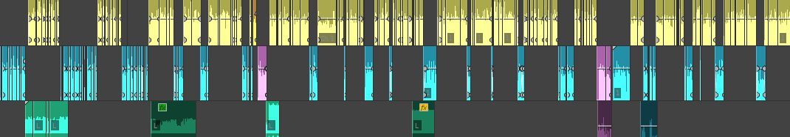
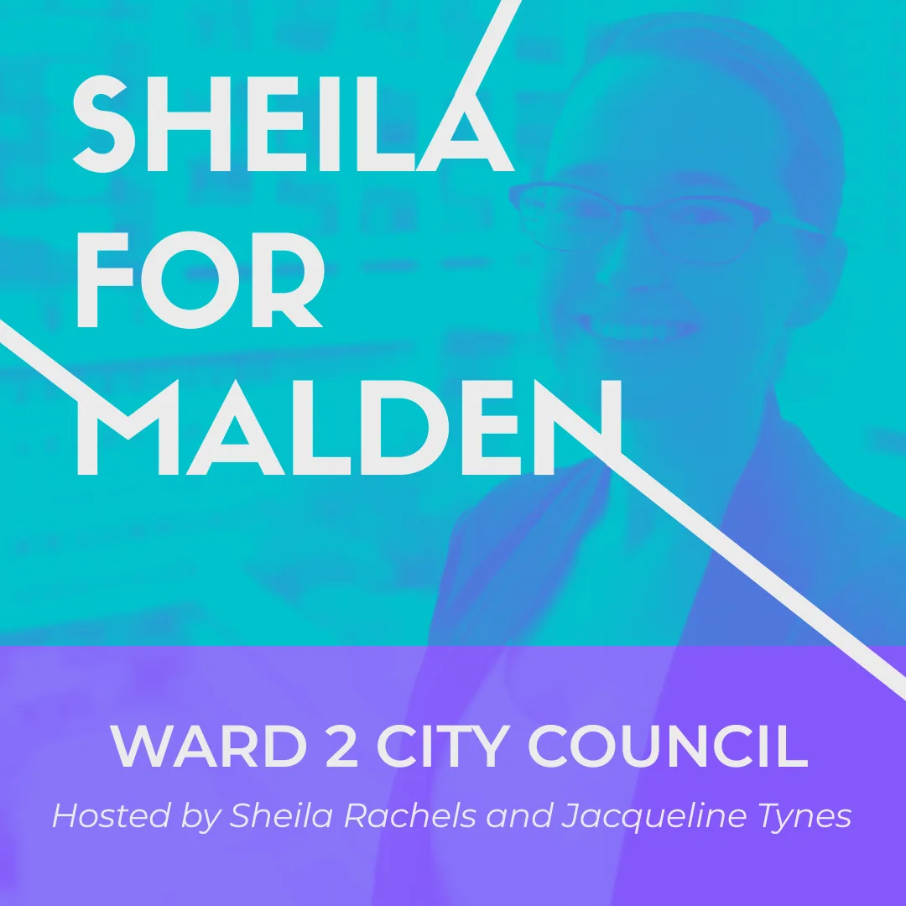

Context
Would your friends let you rope them into a full scale podcast production as first-timers? Mine did!
This two-part case study will examine the tools and strategies we used to put together a budget-conscious, robust production. In the spirit of the show itself, too, I want to put this forward as a roadmap for other folks looking to elevate their hyper-local storytelling experiences. You'll find most of that here in Part 1: everything it took to stand up the show and get the first episode out into the world. In Part 2, I'll focus on the integration of guest interviews, audience engagement over the run of the show, and a post-mortem on its impact.
Learning that my friend Sheila was running for City Council in our hometown of Malden, MA was one of those moments of synchronicity. I had been rewatching "Parks and Recreation" for the umpteenth time and had just gotten to Season 4 when plucky protagonist, Leslie Knope, is running for...City Council. The resemblance was uncanny: they had the same kind of infectious enthusiasm, passion, and pride for their neighborhood. My producer brain went: “hmmm!” Could there be a better niche for a limited podcast series exploration? Was this my chance to be the Ann Perkins to her Leslie?
Off the bat, I have to give a special thanks to Jacqueline and Sheila for muscling through the email barrages, doc comments, and unceremonious recording interruptions that came with this project. It's a big leap of faith to give your voice over to somebody (just ask Ariel), especially for the first time, but they dove right in and quickly became critical collaborators. As you'll read, I didn't spare them much in the way of professional conduct: this was as real a deal as we could muster for the dollar value. Everywhere we could pay with sweat-equity instead of cash, we did. So for all those Friday morning meetings and Sunday recording sessions on top of everything else you already do--thank you!
With all the tools available for podcast production today, ranging from modular, feature-specific processing to all-in-one solutions that can even handle the editing and distribution, "it's never been easier to make a quality podcast." You'll find this statement in just about any baby's-first-podcast blog post, and yet, it remains true. As that barrier to entry keeps getting lower and lower, productions can afford more specificity and ephemerality. This is without a doubt the most focused show lens I've ever used, but that's the beauty of a 4-part limited series, isn't it? It doesn't need to live forever. How do you get it living in the first place though? There's no one-size-fits-all method to show-running but, like our show tagline says: "If you can't find what you're looking for, you can always make it yourself."

Planning
First, we took a hard look at the situation. Time and money were in short supply. Our runway was long (we first discussed the idea in April 2023, and the election is in November), but our weekly commitments needed to stay low. The campaign committee had some funds to allocate toward the project, but we sought to reserve those for unavoidable costs like show hosting. Novelty was a factor as well, and we built in extra time on the front end to address the finer points of home studio setup, scripting, and voiceover style as a group so we could make the most of our recording sessions. All of this went a long way toward assessing what kind of show format would best suit our subject matter, hosts' dynamic, and equipment.
Given the objectively small potential audience size of Malden's Ward 2, it's not like we planned this as some viral phenomenon. It's hard enough to care about local issues where you actually are, let alone anyone else's "local." So early on, it became clear that this podcast had to be at least accessible, relevant, and of value to Malden more broadly on top of being campaign collateral.
With our audience more clearly in view, we needed to address the content: what should those people come away knowing? This moved the conversation to the browser-based concept-mapping platform, Miro, where we asked ourselves these questions and populated our answers onto the board before sorting them into different groups and chains. We wanted listeners to be informed of Sheila's campaign and platform, naturally. We wanted to learn about the surprisingly strong undercurrent of volunteerism and citizen power coursing through the city. And we wanted them to come away with a more empowered sense of their own ability to get involved.
Eventually, we landed on the following breakdown: one episode would be to catch us up to speed on Sheila's path to this moment; another would help us understand what it takes to go from "I'm doing this" to actually building something. And once that thing exists, the third installment would get into the strategy shift from sowing to growing it--whether it's a local campaign or any other grassroots initiative. Finally, just ahead of the election and with over nine months' worth of experience in the rear view, we'd have an opportunity to reflect on it all. After looking at the calendar, then our themes, then back at the calendar, there was a natural distribution of all of our topics in a 4-part arc mapped to each month beginning in July and concluding in October before the election. It was a slow-burn schedule that we could leave at a simmer for the summer while we unpacked the campaign in real time.

And along the way at each of these launches? Four flagship campaign communication touchpoints with voters for the rest of the summer. Four chances to rekindle the conversation around core initiatives. Four examples of practicing what you preach.
Over a span of about 6 weeks, we transformed our meeting agenda action items into a Google Drive-powered collaborative scripting workshop with docs on everything from interview release forms, to boilerplate guest outreach communique, to episode outlines. Sheila began by fleshing out each talking point from our Miro brainstorm with tales from the campaign so far, and I'd work with her to shape them from raw experiences into stories.

Recording
Once the conversation had been mapped out and our content checklist ticked, we convened at my house for our first full recording session in mid-June ahead of an early July launch for our series trailer and E1. We opted to stay simple for our first episode and kept things to just our hosts for that first stage of production. Despite all being in the same location, we used the remote studio platform, Riverside (which creates a recording environment much like a standard Zoom call) for the sake of tech exposure and conducting future recordings remotely.
I won't sugarcoat the process: it was a 5 hour slough of a recording that day that cost us all a bit of sanity. Our overwrought episode script kept us on the rails for a while, but it was only about 80% complete, tapering off towards the end in the spirit of better assessing our estimated total run time. On-the-spot rewrites often meant that only our latest takes contained our mutually-approved content, drastically reducing the take selection available to us in post versus how much we'd captured overall.
For equipment, we used my bob-standard Blue Yeti digital mic and a fancier Shure SM57 mic borrowed from Sheila's father which I put in a boom pole/C-stand setup. Blanket drapes and other earnestly DIY dampening kept ambient noise and echo to a minimum. The conversational element of our host talk, however, was somewhat difficult to capture while also keeping the two recordings--happening maybe 15 feet apart--from bleeding into one another.


On the whole, I’m impressed with our audio quality despite some up-front difficulties. Jacqueline’s clips came in with some hard-surface reverb and too much room tone, but remained salvageable thanks to good preparation. Sheila’s Shure mic needed about 20dB clean gain (usually achieved with a pre-amp setup when this type of equipment is used with XLR cables instead of a USB connection), but otherwise her clips cleaned up tidily when I brought them into Premiere. Let’s address the elephant in the room: Premiere for podcasts?!
Yes!
Editing
One might think ProTools or even Adobe Audition would be the program of choice for a project like this. I, however, come from the world of video. Premiere contains a few advantages for long-form content that I think can go overlooked in the podcast space. For one thing: captions. When you’re sifting through hours of audio content, unless you can read the waveforms by sight, Premiere’s auto-transcription and captioning features offer a marvelous way to scrub through your audio content intelligently by reading instead of listening around for the needle in the proverbial haystack. That workflow performs even harder if it’s a project with multiple editors or a substantial multimedia element. Premiere allows you to assemble all of your media in one place, even down to the compositions created in After Effects.


With the takes selected and the fat trimmed, I plugged in some licensed stock music sourced from Premiumbeat for our show theme and backing tracks. For $65 (for a 3 month minimum), we can get 5 songs a month, which should carry us nicely though the show’s run with more options as the season goes on. We had originally planned to cut this cost and record original acoustic guitar music played by Sheila’s brother, but we weren’t able to before production ramped up. A few rounds of review and revision later, we had hit our 40 minute mark (~6000 words in the final transcript) and were ready for the final logistical stage: hosting.
Release
I had used Zencastr, Squadcast, and Buzzsprout in the past with clients, but Buzzsprout felt like it fit our needs most snugly for this show. Just $12/month would keep our show available on all the major podcast apps and directories–and for the first 90 days, episodes can live there for free. Be warned that the route onto Apple Podcasts was unpleasantly convoluted, but after a day and a half of hoop jumping, we found our way onto “wherever you get your podcasts.”
We finished our series trailer and first episode about 2.5 weeks ahead of our July 7 tentative launch date. With the extra lead time (and the episodes technically live), we decided to share the show with a small group of close friends, family, and future guests first to hopefully seed the show page with listens, ratings, and reviews before opening it to a larger and potentially less sympathetic audience. I’ll be quite eager to follow the growth of the show’s reach in this totally unpaid, organic fashion, but all in good time!
For now, there’s nothing like searching your show name on Spotify when everything’s done and dusted. Seeing it pop up in the results is quite the feeling. As first-timers, I hope Sheila and Jacqueline get to relish the achievement, too. The start to this project has been such a great exercise in editing, and it’s been wonderful to shake off the show-running rust with friends! I’m looking forward to the rest of the summer’s promise of new episodes, new guest interviews, and new misadventures in hyper-local podcasting!
